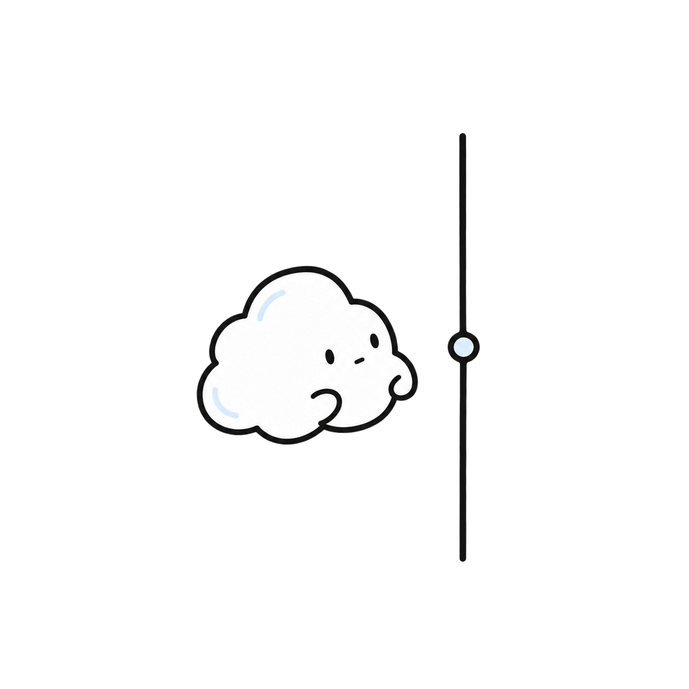

Development
Timeline
64歳、主婦。プログラミング経験ゼロからのアプリづくり。
小さな作品をつくったり、あれこれ試したり。
日々の制作と試行錯誤のメモ。
こくも
some clouds からちぎれて生まれた、
クーモの仲間。
日々の記録や、つくっているものの
そばにいます。

2026
10月
APP
- Developmentにカテゴリー機能を追加。Obsidianとの形式の違いでビルドエラー。修正して解決。
- Books、Development、Timelineのフッターが他のページと揃っていなかったため修正を依頼。
- 右寄せにはなったものの、トップページとは配置が異なり、再修正することに。
- 小さな修正でも思いどおりにいかない。AIへの指示の難しさを実感。でも文句
APP
- Xcode 27.0をインストールし、初期設定を実施。
- iOS 27.0 Simulatorと開発者向けドキュメントのダウンロードを完了。
- Xcodeの起動画面まで確認。Swiftアプリの作成は次回に持ち越し。
- クーモとこくもの今後の活動方針について検討。
- キャラクターの世界観や、将来の展開について構想を整理。
APP
- Mac miniにGitHub Desktopをインストールし、GitHubアカウントにログイン。
- GitHubの6つのリポジトリをMac miniのローカル環境にクローン。
- Obsidianをインストールし、`some-clouds`をVaultとして設定。
- Obsidianのフォルダ表示を整理し、不要なフォルダを非表示に設定。
- `timeline-template`を使ってTimelineの記事を作成する手順を確認。
- GitHub DesktopのStashを確認し、不要な`.DS_Store`を整理。
- `.gitignore`に`.obsidian/`と`.DS_Store`を追加し、コミット＆プッシュ。
- Mac miniにChatGPTデスクトップアプリを導入。
- X・Threadsなど、日常的に使うアプリや表示環境を整備。
APP
mac miniの設定をした
obsidianをダウンロードした
winとmacbookと共有したいんだけど
なんかややこい
クラウドが不安定
その他、デスクトップなどの設定をチャッピー先生と格闘する
APP
mac miniをお迎えした
LGのディスプレイに接続するところから大苦戦
USB-Cのケーブルならなんでもいいと思ってたよ
映像用じゃないとダメなのねえ
いきなり派手につまづく
該当する記録はありません。